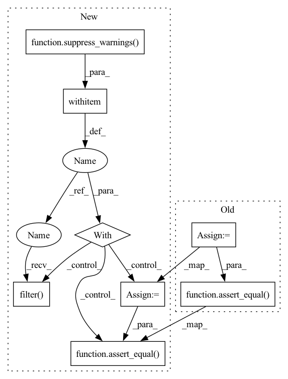

Pattern ID :21317

Before Change
def test_electrocardiogram():
// Test shape, dtype and stats of signal
ecg = electrocardiogram()
assert ecg.dtype == float
assert_equal(ecg.shape, (108000,))
assert_almost_equal(ecg.mean(), -0.16510875)
assert_almost_equal(ecg.std(), 0.5992473991177294)
After Change
def test_electrocardiogram():
with suppress_warnings() as sup:
sup.filter(category=DeprecationWarning)
// Test shape, dtype and stats of signal
ecg = electrocardiogram()
assert ecg.dtype == float
assert_equal(ecg.shape, (108000,))
assert_almost_equal(ecg.mean(), -0.16510875)
assert_almost_equal(ecg.std(), 0.5992473991177294)
In pattern: SUPERPATTERN
Frequency: 3
Non-data size: 8
Instances
Fragment ID: 68120091
Project Name: scipy/scipy
Commit Name: 81e636eb31c6a11c01c4ffeb880825a409ccb480
Time: 2022-09-05
Author: anirudhdagar6@gmail.com
File Name: scipy/misc/tests/test_common.py
M Class Name: AnonimousClass
N Class Name: AnonimousClass
M Method Name: test_electrocardiogram(0)
N Method Name: test_electrocardiogram(0)
M Parent Class:
N Parent Class:
M File Name: scipy/misc/tests/test_common.py
N File Name: scipy/misc/tests/test_common.py
M Start Line: 16
M End Line: 20
N Start Line: 19
N End Line: 26
'>
Before Change
z = sin(x[None,:] + y[:,None]/2.)
ip3 = interp2d(x, y, z, kind="cubic")
x = linspace(0, 2, 31)
y = linspace(0, pi, 30)
assert_equal(ip1(x, y), ip2(x, y))
assert_equal(ip1(x, y), ip3(x, y))
def test_interp2d_eval_unsorted(self):
y, x = mgrid[0:2:20j, 0:pi:21j]
z = sin(x + 0.5*y)
After Change
y = linspace(0, pi, 21)
z = sin(x[None, :] + y[:, None] / 2.)
with suppress_warnings() as sup:
sup.filter(DeprecationWarning)
ip1 = interp2d(x.copy(), y.copy(), z, kind="cubic")
np.random.shuffle(x)
z = sin(x[None, :] + y[:, None]/2.)
ip2 = interp2d(x.copy(), y.copy(), z, kind="cubic")
np.random.shuffle(x)
np.random.shuffle(y)
z = sin(x[None, :] + y[:, None] / 2.)
ip3 = interp2d(x, y, z, kind="cubic")
x = linspace(0, 2, 31)
y = linspace(0, pi, 30)
assert_equal(ip1(x, y), ip2(x, y))
assert_equal(ip1(x, y), ip3(x, y))
def test_interp2d_eval_unsorted(self):
y, x = mgrid[0:2:20j, 0:pi:21j]
z = sin(x + 0.5*y)
'>
Fragment ID: 68120090
Project Name: scipy/scipy
Commit Name: b4eb1a1e87d8f8fbc9b9bb226f01a1b16f59f4b0
Time: 2022-11-06
Author: evgeny.burovskiy@gmail.com
File Name: scipy/interpolate/tests/test_interpolate.py
M Class Name: TestInterp2D
N Class Name: TestInterp2D
M Method Name: test_interp2d_meshgrid_input_unsorted(1)
N Method Name: test_interp2d_meshgrid_input_unsorted(1)
M Parent Class:
N Parent Class:
M File Name: scipy/interpolate/tests/test_interpolate.py
N File Name: scipy/interpolate/tests/test_interpolate.py
M Start Line: 49
M End Line: 64
N Start Line: 54
N End Line: 73
'>
Before Change
def test_mixed_nan_inputs(self):
x = np.array([np.nan, 1, 2, 3, np.nan])
result = special.factorial(x, exact=True)
assert_equal(np.array([np.nan, 1, 2, 6, np.nan]), result)
result = special.factorial(x, exact=False)
assert_equal(np.array([np.nan, 1, 2, 6, np.nan]), result)
class TestFresnel(object):
def test_fresnel(self):
After Change
def test_mixed_nan_inputs(self):
x = np.array([np.nan, 1, 2, 3, np.nan])
with suppress_warnings() as sup:
sup.filter(DeprecationWarning, "Using factorial\\(\\) with floats is deprecated")
result = special.factorial(x, exact=True)
assert_equal(np.array([np.nan, 1, 2, 6, np.nan]), result)
result = special.factorial(x, exact=False)
assert_equal(np.array([np.nan, 1, 2, 6, np.nan]), result)
class TestFresnel(object):
def test_fresnel(self):
'>
Fragment ID: 68120088
Project Name: scipy/scipy
Commit Name: f7b6202ae69282b0942a2f5671737a85a558e1b9
Time: 2020-05-09
Author: ralf.gommers@gmail.com
File Name: scipy/special/tests/test_basic.py
M Class Name: TestFactorialFunctions
N Class Name: TestFactorialFunctions
M Method Name: test_mixed_nan_inputs(1)
N Method Name: test_mixed_nan_inputs(1)
M Parent Class: object
N Parent Class: object
M File Name: scipy/special/tests/test_basic.py
N File Name: scipy/special/tests/test_basic.py
M Start Line: 1827
M End Line: 1830
N Start Line: 1827
N End Line: 1834